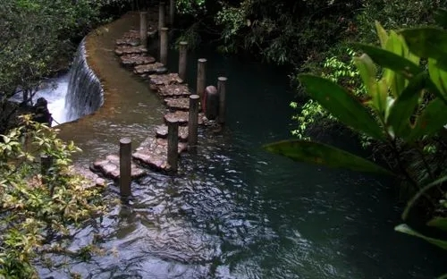
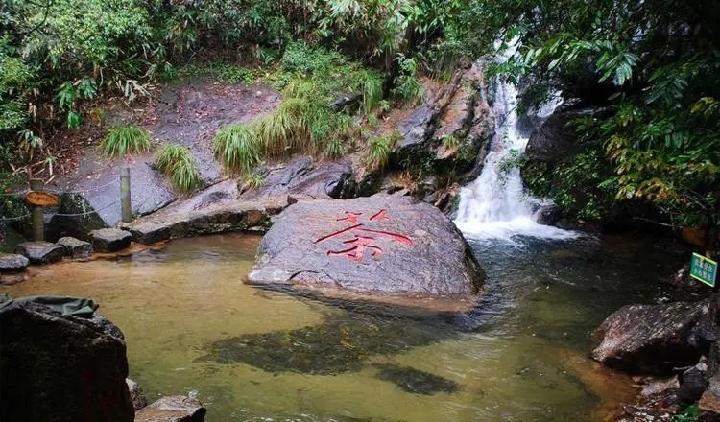
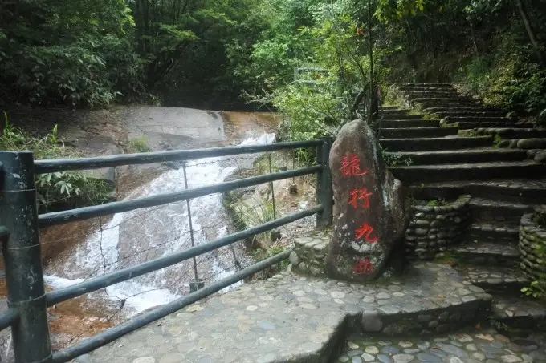

龙川大峡谷
国家普通级旅游景区
开放时间：8:00-20:00

景点介绍

龙川大峡谷坐落在武夷自然保护区内，这里峰峦叠翠，繁花掩映，珍禽异兽，叠泉流瀑。诸多景致为一体，耳闻鸟鸣泉吟，目染峻山清涧。

从跨入景区起，就进入了盆景和瀑布的世界。古木参天，藤萝盘绕，集千年的灵气而形神兼俱，美轮美奂的瀑布顺着怪石嶙峋的山体银链垂空，飞花溅玉，在阳光的照射下衬着丹霞的山体折射出迷人的七彩光晕，美不胜收，宛如仙境。

武夷山如林的自然景观中，她独树一帜，桀骜不训！在青翠的群山中潇潇洒洒的流淌着武夷山的诗情画意。沐浴着这迷人的山水，我们享受着无际的绿，在最原始浪漫的情趣中，我们溶入了大自然，与山水同醉……
开放时间：8:00-15:30
交通信息：
航空：武夷山机场到武夷山景区的路程在15公里左右，可起降波音737等中型飞机，现已开通武夷山至福州、厦门、北京、上海、武汉、广州、深圳、珠海、常州等10条航线。从武夷山度假区打的到机场，车费在30元左右。
铁路：福州、厦门和泉州每天各有一班空调快速列车直达武夷山。从上海、杭州方向来的旅客可先乘火车到江西上饶，再从上饶去武夷山（4小时）。从北京、南京、合肥、南昌、西安、武汉、长沙、广州、重庆、昆明方向来的旅客可先乘火车到福建邵武，再转车到武夷山。
公路：福建省的南平、邵武和江西省的上饶是进出武夷山的口子，每天都有客车往返，其中从上饶到武夷山的班车票价为25元，4小时可到达；从邵武到武夷山车程3小时。